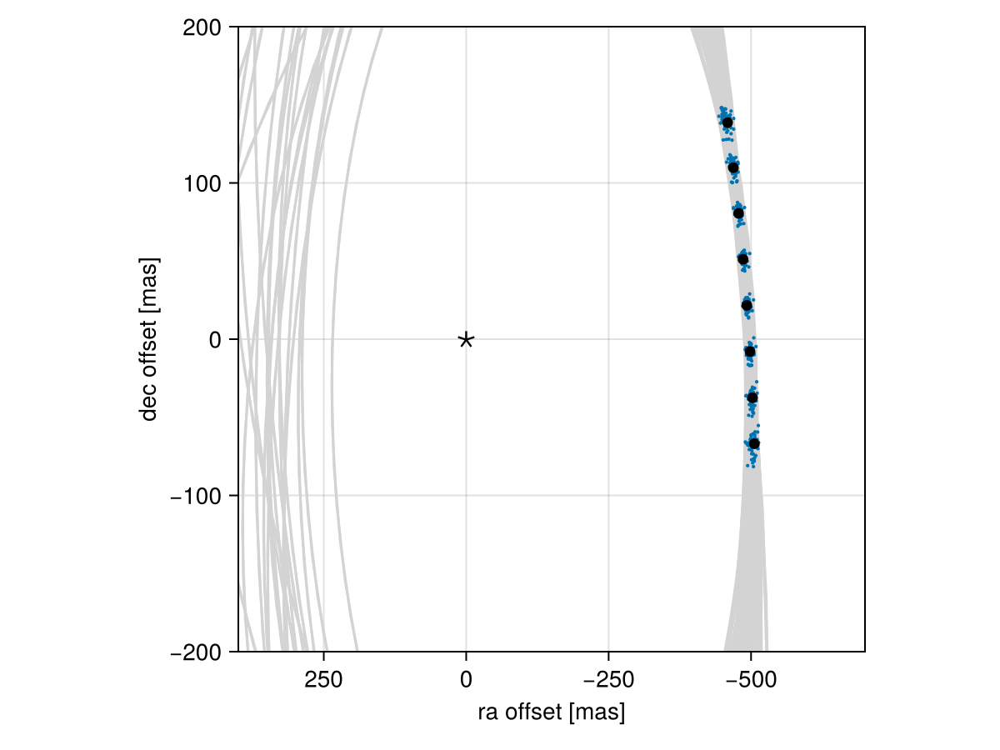

Posterior Predictive Checks
A posterior predictive check compares our true data with simulated data drawn from the posterior. This allows us to evaluate if the model is able to reproduce our observations appropriately. Samples drawn from the posterior predictive distribution should match the locations of the original data.
To demonstrate, we will fit a model to relative astrometry data:
using Octofitter
using Distributions
astrom_like = PlanetRelAstromLikelihood(Table(;
epoch= [50000,50120,50240,50360,50480,50600,50720,50840,],
ra = [-505.764,-502.57,-498.209,-492.678,-485.977,-478.11,-469.08,-458.896,],
dec = [-66.9298,-37.4722,-7.92755,21.6356, 51.1472, 80.5359, 109.729, 138.651,],
σ_ra = fill(10.0, 8),
σ_dec = fill(10.0, 8),
cor = fill(0.0, 8)
))
@planet b Visual{KepOrbit} begin
a ~ truncated(Normal(10, 4), lower=0, upper=100)
e ~ Uniform(0.0, 0.5)
i ~ Sine()
ω ~ UniformCircular()
Ω ~ UniformCircular()
θ ~ UniformCircular()
tp = θ_at_epoch_to_tperi(system,b,50420) # reference epoch for θ. Choose an MJD date near your data.
end astrom_like
@system Tutoria begin
M ~ truncated(Normal(1.2, 0.1), lower=0)
plx ~ truncated(Normal(50.0, 0.02), lower=0)
end b
model = Octofitter.LogDensityModel(Tutoria)
using Random
Random.seed!(0)
chain = octofit(model)Chains MCMC chain (1000×28×1 Array{Float64, 3}):
Iterations = 1:1:1000
Number of chains = 1
Samples per chain = 1000
Wall duration = 4.13 seconds
Compute duration = 4.13 seconds
parameters = M, plx, b_a, b_e, b_i, b_ωy, b_ωx, b_Ωy, b_Ωx, b_θy, b_θx, b_ω, b_Ω, b_θ, b_tp
internals = n_steps, is_accept, acceptance_rate, hamiltonian_energy, hamiltonian_energy_error, max_hamiltonian_energy_error, tree_depth, numerical_error, step_size, nom_step_size, is_adapt, loglike, logpost, tree_depth, numerical_error
Summary Statistics
parameters mean std mcse ess_bulk ess_tail rh ⋯
Symbol Float64 Float64 Float64 Float64 Float64 Float ⋯
M 1.1845 0.0961 0.0043 525.2483 463.9631 1.00 ⋯
plx 49.9991 0.0200 0.0007 971.5765 538.9379 0.99 ⋯
b_a 11.8152 2.3839 0.1832 169.7383 381.7901 1.01 ⋯
b_e 0.1577 0.1127 0.0067 296.6166 564.5397 1.00 ⋯
b_i 0.6302 0.1711 0.0136 175.1922 152.0701 1.01 ⋯
b_ωy 0.0400 0.7254 0.0696 128.4484 497.3879 1.00 ⋯
b_ωx -0.0097 0.7005 0.0660 126.9587 582.4059 1.01 ⋯
b_Ωy 0.0900 0.7794 0.1002 76.5428 547.7120 1.00 ⋯
b_Ωx 0.1005 0.6329 0.0724 85.5304 348.6331 1.00 ⋯
b_θy 0.0746 0.0102 0.0004 680.2466 613.9673 1.00 ⋯
b_θx -1.0026 0.0998 0.0044 544.8941 444.4151 1.00 ⋯
b_ω -0.2066 1.7719 0.1440 192.7548 426.0778 1.00 ⋯
b_Ω -0.2741 1.7366 0.1972 102.3297 239.6495 1.00 ⋯
b_θ -1.4966 0.0071 0.0002 952.1799 601.3103 1.00 ⋯
b_tp 42254.6204 5000.2062 306.4931 248.3660 328.9537 1.00 ⋯
2 columns omitted
Quantiles
parameters 2.5% 25.0% 50.0% 75.0% 97.5%
Symbol Float64 Float64 Float64 Float64 Float64
M 0.9910 1.1166 1.1940 1.2512 1.3589
plx 49.9609 49.9868 49.9989 50.0119 50.0383
b_a 8.1412 10.1437 11.4085 13.2529 17.2345
b_e 0.0086 0.0624 0.1362 0.2349 0.4123
b_i 0.2285 0.5398 0.6470 0.7496 0.9094
b_ωy -1.0644 -0.6674 0.0685 0.7420 1.0778
b_ωx -1.0613 -0.7064 0.0372 0.6545 1.0369
b_Ωy -1.0830 -0.7337 0.2218 0.8595 1.0976
b_Ωx -1.0342 -0.4215 0.2001 0.6428 1.0804
b_θy 0.0551 0.0673 0.0742 0.0814 0.0952
b_θx -1.2205 -1.0679 -0.9974 -0.9335 -0.8211
b_ω -2.9971 -1.9356 0.0788 1.0729 2.9774
b_Ω -2.9617 -2.1515 0.2437 0.8626 2.8350
b_θ -1.5113 -1.5009 -1.4965 -1.4916 -1.4836
b_tp 31142.6713 39197.2689 43257.0511 45871.2011 49799.3752
We now have our posterior as approximated by the MCMC chain. Convert these posterior samples into orbit objects:
# Instead of creating orbit objects for all rows in the chain, just pick
# every twentieth row.
ii = 1:20:1000
orbits = Octofitter.construct_elements(chain, :b, ii)50-element Vector{Visual{KepOrbit{Float64}, Float64}}:
Visual{KepOrbit{Float64}, Float64}(KepOrbit(8.88, 0.193, 0.335, 0.67, 0.549, 45400.0, 1.32), 49.98676484782654, 4.1263922685920442e6)
Visual{KepOrbit{Float64}, Float64}(KepOrbit(12.7, 0.0797, 0.662, -2.55, 0.62, 49300.0, 1.23), 50.01296600237048, 4.124230504350084e6)
Visual{KepOrbit{Float64}, Float64}(KepOrbit(10.7, 0.000139, 0.554, -2.75, 0.879, 49600.0, 1.21), 50.00239735601022, 4.125102213228327e6)
Visual{KepOrbit{Float64}, Float64}(KepOrbit(9.25, 0.204, 0.496, -2.11, 3.48, 45100.0, 1.2), 49.95540021731167, 4.1289830349216266e6)
Visual{KepOrbit{Float64}, Float64}(KepOrbit(10.8, 0.0155, 0.577, 0.779, 4.1, 38500.0, 1.17), 50.00724608420628, 4.124702241204688e6)
Visual{KepOrbit{Float64}, Float64}(KepOrbit(8.67, 0.223, 0.479, -0.969, 1.92, 45000.0, 1.26), 50.0045475392593, 4.1249248348474377e6)
Visual{KepOrbit{Float64}, Float64}(KepOrbit(17.2, 0.388, 0.874, -3.08, 1.25, 49600.0, 1.26), 49.99570140077221, 4.125654690721353e6)
Visual{KepOrbit{Float64}, Float64}(KepOrbit(12.9, 0.0137, 0.733, -2.6, 3.5, 40300.0, 1.13), 50.032701531620624, 4.122603690900854e6)
Visual{KepOrbit{Float64}, Float64}(KepOrbit(11.1, 0.0186, 0.6, -2.27, 3.77, 43600.0, 1.13), 50.00314743744611, 4.125040333871729e6)
Visual{KepOrbit{Float64}, Float64}(KepOrbit(11.6, 0.167, 0.744, 1.95, 0.414, 45800.0, 1.32), 49.985976954304356, 4.126457309988382e6)
⋮
Visual{KepOrbit{Float64}, Float64}(KepOrbit(9.65, 0.284, 0.439, -2.05, 2.74, 43600.0, 1.35), 49.99568253794589, 4.1256562472859193e6)
Visual{KepOrbit{Float64}, Float64}(KepOrbit(15.5, 0.364, 0.861, -2.8, 1.62, 31400.0, 1.32), 49.98829806389218, 4.1262657059530993e6)
Visual{KepOrbit{Float64}, Float64}(KepOrbit(10.1, 0.015, 0.557, -1.93, 1.29, 41500.0, 1.33), 49.985216531381624, 4.1265200856037727e6)
Visual{KepOrbit{Float64}, Float64}(KepOrbit(10.5, 0.313, 0.59, -2.19, 2.85, 42000.0, 1.18), 50.01724630904125, 4.123877566660742e6)
Visual{KepOrbit{Float64}, Float64}(KepOrbit(16.2, 0.0308, 0.919, 2.22, 3.48, 31600.0, 1.25), 50.00691213581198, 4.124729786150608e6)
Visual{KepOrbit{Float64}, Float64}(KepOrbit(12.9, 0.0813, 0.704, 2.71, 3.55, 38000.0, 1.19), 50.018759953184095, 4.1237527718211575e6)
Visual{KepOrbit{Float64}, Float64}(KepOrbit(19.4, 0.363, 0.794, -2.47, 0.627, 49400.0, 1.08), 50.004631250099926, 4.124917929468539e6)
Visual{KepOrbit{Float64}, Float64}(KepOrbit(14.1, 0.337, 0.724, 0.374, 5.73, 35000.0, 1.21), 50.00451466058198, 4.124927547043997e6)
Visual{KepOrbit{Float64}, Float64}(KepOrbit(10.4, 0.0224, 0.532, 2.26, 1.09, 47800.0, 1.13), 49.99932881877459, 4.1253553772215466e6)Calculate and plot the location the planet would be at each observation epoch:
using CairoMakie
epochs = astrom_like.table.epoch' # transpose
x = raoff.(orbits, epochs)[:]
y = decoff.(orbits, epochs)[:]
fig = Figure()
ax = Axis(
fig[1,1], xlabel="ra offset [mas]", ylabel="dec offset [mas]",
xreversed=true,
aspect=1
)
for orbit in orbits
Makie.lines!(ax, orbit, color=:lightgrey)
end
Makie.scatter!(
ax,
x, y,
markersize=3,
)
fig
Makie.scatter!(ax, astrom_like.table.ra, astrom_like.table.dec,color=:black, label="observed")
Makie.scatter!(ax, [0],[0], marker='⋆', color=:black, markersize=20,label="")
Makie.xlims!(400,-700)
Makie.ylims!(-200,200)
fig
Looks like a great match to the data! Notice how the uncertainty around the middle point is lower than the ends. That's because the orbit's posterior location at that epoch is also constrained by the surrounding data points. We can know the location of the planet in hindsight better than we could measure it!
You can follow this same procedure for any kind of data modelled with Octofitter.